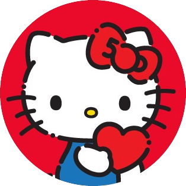

Feliz san valentín Julie 💕
Se me hace lindo as fuck sentir ke rn me es fecha impor, que quiero pasar todos contigo xq me ilusiona, porque onda no sabes lo q te amo amigo, no se que tanto lo showeo o lo notes pero siempre me las pienso así, siempre quiero acabar haciendo cualquier cosa contigo xq se que igual la voy a enjoyear hermano, por eso me sentí horrible desde ke me dijiste que maybe era una despedida, me desconfiguró puto heavy y es que no se como explicarte que pase la que pase quiero estar contigo, ke maybe tenemos que workearla pero quiero hacerla xq te quiero a tí julianny, xq si vuelve a pasar algo solo quiero que podamos hacer que funcione, onda te amo, amo todo d ti y todavía me keda banda por conocerte, me queda banda x hablarte y todo lo que hacer contigo. No quiero decir gracias pero no encuentro otra palabra, x las veces ke te quedaste hasta tarde leyendome lo pendejo, x las ke me supporteaste o stuviste en mis lows, sé que no conozco todo lo ke has hecho pero para mí son banda, y esa es una de las reasons x las que te amo, por haberte quedado aunque yo estuviera pendejo, por no haberte aislado o just dejarme de hablar, por seguirmelas todas amigo, te amo por hacerme feliz, por tenerme confianza, por estar pendejos hablando 15 putas horas y se pasen como si fuera solo 1, porque me haces sentir que 1 hora son solo 5 minutos, te amo por cantarme, suma a eso que estás preciosa hermano, tienes linda voz, estás linda as fuck y eres incre, te juro me haces feliz asf, me gustas al point ke acabo sonriendole al celu como pendejo, que cuando me levanto y m aburro me pongo sonido d noti tuya just para levantarm a respondert. Tengo banda de razones, me sigues sumando till the day y quiero que siga siendo así. Gracias por ser mi novia <3.
Hugo
